ICM 1/48 Bf-109 F2 and Bf-109 F4/Z
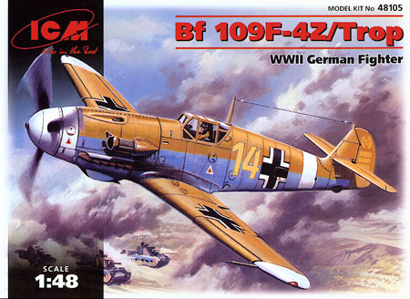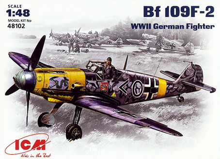
Kit #48102,48103 and 48105
MSRP $26.95 $16.96 from Internet Hobbies
Images and text Copyright � 2008 by Matt Swan
Developmental Background
Willie Messerschmitt�s Bf (or Me) 109 series of aircraft are legendary. With the first prototype ready for flight in 1935 the type saw nearly continuous production all the way through the war and even in the first few years after the war. The type carried the Bf designation during its entire career with the Luftwaffe even after Messerschmitt took over actual production of the aircraft. The A, B and C models were basically developmental aircraft although the B did see service in the Spanish Civil War. The D saw some limited production and about 230 aircraft were in service with the Luftwaffe prior to the war. The E model was the first serious production model and the model that saw initial service in the Battle of Britain. Early E models were equipped with four guns, two in the engine cowling and two in the wings. The center cannon that would mount through the propeller spinner not ready for service at this time.
In 1941 production of the F model began as a stopgap measure to combat the Mk III Spitfire, as the G models were not ready for production yet. Many German pilots felt that the F model which was referred to as the Franz or Friedrich was the best dog fighter of all the variants. This was also the first variant to use the cantilever elevators and eliminate the elevator support struts. The Franz top speed exceeded the BF109E by a large margin and it had an excellent climb rate but like all 109�s, in a high speed dive the elevator would lock up and the only way to recover was to frantically adjust the elevator trim wheels � some real pucker factor here, especially if you�re being shot at.
The F model began with an improved Daimler-Benz DB601N engine that was used in the F1 and F2 models. This engine was driving a narrow chord VDM propeller and the center cannon position was filled with the 15mm MG151. The fuselage was cleaned up from the earlier E models as well. This 15mm cannon was highly criticized by pilots and was replaced with a 20mm version of the same gun in the F4 model. The F4 also featured an improved DB601E engine. Externally there were very few differences between the two models; most notably the F4 had a slightly deeper chin radiator and a wider chord propeller. A sub variant of the F2 was the F-2 Torp tropicalized variant. The F4 had sub variants R1 with two underwing 20mm cannons and the Z tropicalized version. Later modifications of the F included the F5 and F6 recon versions. In the spring of 1943 the G series began to replace the F series in operational units.
The Kits
These three ICM kits (kit #48103, Bf-109F4 not pictured) are identical other than the decals and box art. Each kit includes both the wide chord and narrow chord propellers and both chin radiators along with two slightly different exhaust manifolds. As with most ICM kits they come in the annoying end opening light duty cardboard box. I think the largest single issue that ICM has in their production is poor quality consistency. This can be seen in several areas such as plastic quality, in looking at two identical kits one is made from a light gray plastic and the other from a medium dark gray plastic. Both kits display a medium to high level of flash on the parts and some clean-up work is necessary. Issues can also be found with the decals but I�ll discuss those later. Something very disturbing that I found with both kits was a raised ridge running along the lower fuselage spine right at the seam. This will need to be sanded off and all the panel lines restored along this area. Sprue gates on the parts trees are small and the parts are easily removed. The plastic is fairly soft as is common for ICM kits. Also common for ICM kits is the large amount of mold release agent left on the parts so a pre-assembly wash is absolutely necessary.
Exterior parts contain fine recessed panel lines with good consistency. I have heard reports from other modelers of sink marks in ICM kits but I could not find any evidence of sink marks on either of these kits. During a test fit of the fuselage I found that the mating seam was not very consistent. Some sanding of the machined edges might help this but I�m not sure. As a last resort this could be filled then the spinal seam restored with a scribe or needle. This combined with the lower seam issues adds up to a fair amount of work required from the modeler, at least the panel lines mated up well. Inside we have a reasonable representation of the cockpit with sidewall detail molded into the fuselage. The interior lacks seatbelts but does include mounting points for them so the addition of aftermarket or scratch built belts would be needed. The instrument panel has finely raised details that mush be painted as the decals sheet does not include an option for those who like that alternative. Up front we have a complete and fairly well detailed DB601 engine. The model can be built with the hood detachable so the engine can be viewed. If you are going to do this you may want to add just a few cables and hoses to complete the dress-up of the engine bay. Clear parts look good with raised frame lines and good clarity. As with the gray parts we have plenty of excess mold release agent here so a prewash followed by a coat of Future would be needed. The model can be built with dropped flaps and extended wing slats. Overall the model does have good proportioning and definitely looks like an F model 109.
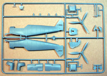
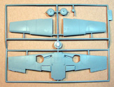
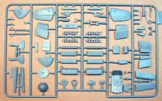
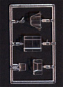
You may click on these small images to view larger pictures.
Decals and Instructions
ICM inconsistencies show up within the instructions and the decals. The assembly instructions for all three kits include a complete parts map and a brief description of the aircraft type in Russian and slightly broken English. Basic assembly is covered in three panels that seem to cover all necessary points and include color call-outs. Here is where a problem becomes apparent. One kit references the colors by RLM numbers and Model Master paint codes. The next kit references the colors by name, mixture ratios and Model Master paint codes. I guess if you are using only model master paints this is okay but I would prefer to see German aircraft paints referred to by the RLM numbers so you can have a greater flexibility in paint manufactures to use. Also should the modeler be less experienced with German subjects and not know what interior colors should be this could be very confusing. All instruction sets include a four panel set of painting and marking instructions. The back side of each kit box does include a full color three view of the aircraft for reference.
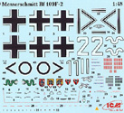
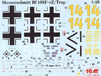
Inconsistence issues show up again in the decals and this has always been an issue with ICM. Sometimes you get good decals and sometimes you don�t. In my F2 kit I got a fairly nice sheet of decals that look very usable while in my F4 box the decals have a flat, dull appearance like they have a bad or insufficient coat of sealant. For some reason the F4 set looks like they would want to silver on me, have not tried them yet so cannot say for certain but you can bet they will be going down with a good coat of Future. Both sets seem to have good color density and good print registry. Both sets include plenty of service stencils and warning markings. Both sets also include black swastikas with white backings.
Conclusions
This kit is priced comparably to the Hasegawa kits and lower than the average 109 kit in this scale. Other than the Fujimi kit it is the only one to offer a complete engine as a standard feature and that engine is of better quality than the Fujimi engine. The plastic is soft, there is plenty of mold release agent to deal with and a disturbing ventral ridge on the fuselage that must be removed. Decals include everything you could want other than consistent quality. Instructions are adequate but have inconsistencies in the paint charts. The kit is well priced and will build up into a nice representation of an F model 109 but not without some work.
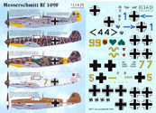
There exists a multitude of 1/48 scale 109 accessories that can be converted for use with this kit from resin cockpits or photo etched detail sets but one that really caught my eye was the 109F decals from Iliad Designs. This sheet of decals is all about F2 and F4 109s and offers some rather unusual choices. These decals display excellent color density and print registry but do not include your service stencils and warning markings. It is entirely possible that these were over painted in the field but I like to have them visible on my models.
Well, the ICM kit is not perfect by a goodly margin but it does have a good price and can be successfully built into a nice model. While not for the inexperienced modeler I still think it is a good buy and would recommend you try at least one. If ICM could get their consistency issues under control these kits would be much more desirable.
Construction
1/14/2009
I�m building this kit (the Bf-109F-2) more as an excuse to use some of those Iliad decals than for any other reason. I am not going to use the engine. I did look at the engine and start assembly however I was not especially thrilled with the parts fit and had some suspicions that things were not going to line up well with the exhausts.  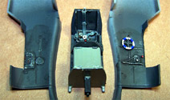
Since the crank shaft on the engine is required to mount the propeller I had to fabricate some kind of replacement. This was done by placing a piece of sprue in my Dremel and turning it at low speed against some sandpaper. I melted the first one off when I got carried away but the second attempt resulted in a nicely turned plastic shaft that fit the fuselage opening and the propeller opening just fine. Overall construction was very straight-forward with no difficulties. A little fill was needed around the nose seams but otherwise nothing was needed anywhere else. I did have to repair the upper and lower fuselage spinal seams which were done with my JLC Razor Saw.
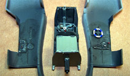
Since the crank shaft on the engine is required to mount the propeller I had to fabricate some kind of replacement. This was done by placing a piece of sprue in my Dremel and turning it at low speed against some sandpaper. I melted the first one off when I got carried away but the second attempt resulted in a nicely turned plastic shaft that fit the fuselage opening and the propeller opening just fine. Overall construction was very straight-forward with no difficulties. A little fill was needed around the nose seams but otherwise nothing was needed anywhere else. I did have to repair the upper and lower fuselage spinal seams which were done with my JLC Razor Saw.
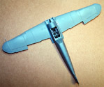
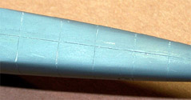
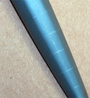
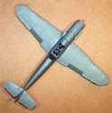
Painting was done with Model Master RLM-76 enamel on the lower surfaces and the uppers were done first with RLM-74 then followed with my own version of RLM-28, wine red. 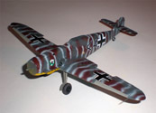
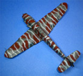
This was all done freehand with the XF tip in my Sotar 20/20 airbrush. Once the basic pattern was completed I reloaded with RLM-76 and shot the fine lines. Decals behaved very nicely other than I got some sag on the left fuselage marking and am not exactly sure how that happened � might have grabbed it when it was still damp and not realized it. Final finishing was all pretty standard with a basic sludge wash followed by a blend of Polly Scale clear flat and Micro-Flat then some chalk weathering. Other than the Iliad decals the only other aftermarket items used on this build were the Lion Roar seatbelts and armor plate for the back of the pilot�s head. All the instrument detail was done using various punched instrument decals from the spares box. Pictures were taken with a pocket Olympus digital camera, the model is setting on a sheet of Heki Grass in front of a railroad sky backdrop. Both the grass and the backdrop came from Scenic Express. Lighting was provided with three daylight bulbs mounted in armature type lamps bolted to the desk. This was a fun little build and a good exercise in painting; I will definitely come back and build the ICM Bf-109F-4 at some point in the future.
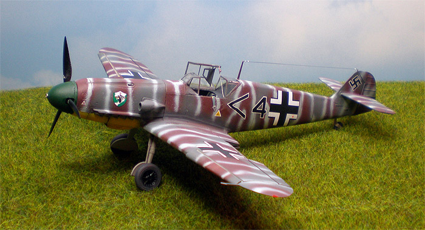
You may click on any of these small images to view larger pictures
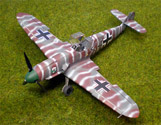
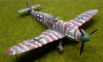
 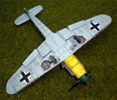
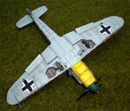


 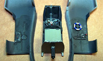
Since the crank shaft on the engine is required to mount the propeller I had to fabricate some kind of replacement. This was done by placing a piece of sprue in my Dremel and turning it at low speed against some sandpaper. I melted the first one off when I got carried away but the second attempt resulted in a nicely turned plastic shaft that fit the fuselage opening and the propeller opening just fine. Overall construction was very straight-forward with no difficulties. A little fill was needed around the nose seams but otherwise nothing was needed anywhere else. I did have to repair the upper and lower fuselage spinal seams which were done with my JLC Razor Saw.
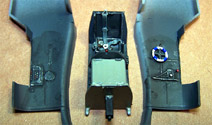
Since the crank shaft on the engine is required to mount the propeller I had to fabricate some kind of replacement. This was done by placing a piece of sprue in my Dremel and turning it at low speed against some sandpaper. I melted the first one off when I got carried away but the second attempt resulted in a nicely turned plastic shaft that fit the fuselage opening and the propeller opening just fine. Overall construction was very straight-forward with no difficulties. A little fill was needed around the nose seams but otherwise nothing was needed anywhere else. I did have to repair the upper and lower fuselage spinal seams which were done with my JLC Razor Saw.

{kind=link}
{kind=link}
{kind=link}
{kind=link}
{kind=link}
{kind=link}
{kind=link}
{kind=link}
{kind=link}
{kind=link}
{kind=link}
{kind=link}
{kind=link}
{kind=link}
{kind=link}
{kind=link}
{kind=link}